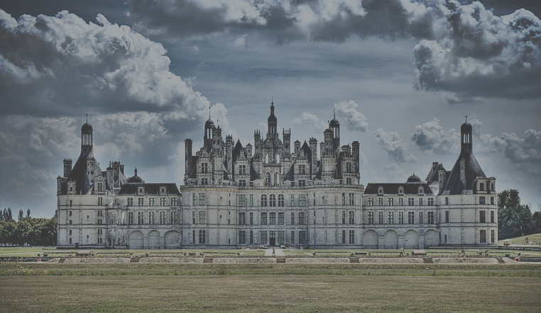

Castele din Franța
Franța ar putea fi numită cu ușurință Țara Castelelor. În Hexagon există mii de castele; numai în regiunea Dordogne, din sud-vestul Franței, se spune că ar fi 1000 de astfel de
fortărețe medievale. Mai mici sau mai mari, aceste castele – pe care francezii le numesc chateaux– aduc aminte de vremea în care Regatul Franței era cel mai puternic stat din Occident.
Castelele franceze atrag milioane de turiști în fiecare an; numai la Chambord, perla Văii Loarei, ajung anual peste 800.000 de oameni.
Franța este țara cea mai vizitată din lume de turiști străini, cu zeci de milioane de turiști în fiecare an, dar numai a treia din lume după achizițiile de pachete
turistice internaționale. Motivele sunt diverse: este vorba atât despre turismul cultural (îndreptat, în special, către Paris), cel balnear (în special pe Coasta de Azur), cel natural,
turismul de afaceri (Parisul este principala destinație mondială pentru acest tip de turism), de recreere (Disneyland Paris este de departe cel mai frecventat parc de distracții din Europa) și
de practicarea sporturilor de iarnă (în special în Alpii de Nord). Atracțiile turistice cele mai vizitate sunt, în marea lor majoritate, situate în Île-de-France (Disneyland Paris,
Muzeul Luvru, Turnul Eiffel, Palatul de la Versailles ); dar și câteva obiective din provincie atrag și ele numeroși turiști, cum ar fi castelele din Valea Loarei.
Franţa este una dintre cele mai frumoase ţări din lume. Superbele stiluri arhitecturale ale castelelor sunt amestecate cu frumuseţea naturală şi pitorească, a căror combinaţie oferă
o experienţă minunată în ceea ce priveşte istoria şi cultura Franţei.